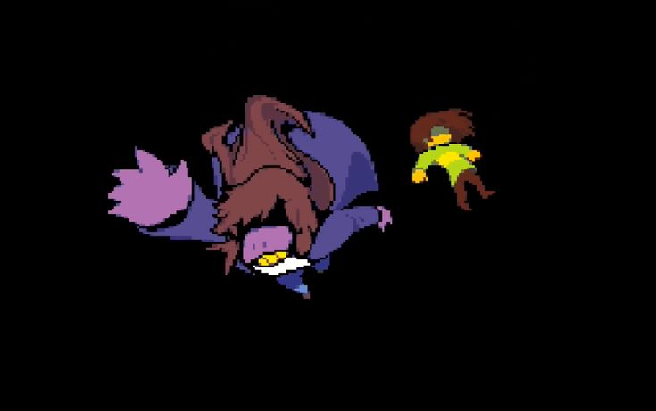
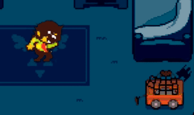
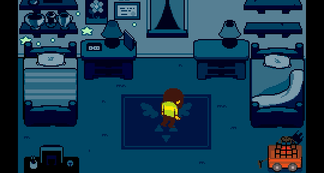

CHAPTER 1

Cerita dimulai dengan Kris, seorang remaja manusia yang tinggal di kota kecil bernama Hometown. Saat di sekolah, ia dan Susie pergi ke lemari peralatan untuk mengambil kapur, namun mereka malah jatuh ke dimensi lain yang gelap.
Di Dark World, Kris dan Susie bertemu dengan Ralsei. Ia menjelaskan bahwa keseimbangan dunia terancam oleh munculnya Dark Fountain baru. Sesuai legenda, hanya seorang Manusia, Monster, dan Pangeran Kegelapan yang bisa menutupnya. Kris adalah satu-satunya yang memiliki SOUL manusia yang diperlukan untuk tugas ini.
Perjalanan mereka tidak mudah karena Susie menolak untuk bertindak sebagai pahlawan. Ia lebih suka menggunakan kekerasan daripada diplomasi (ACTing) yang diajarkan Ralsei. Di tengah jalan, mereka terus-menerus dihadang oleh Lancer, putra raja yang mencoba bertindak jahat namun sebenarnya sangat kikuk dan butuh teman.
Karena muak dengan aturan Ralsei, Susie memutuskan keluar dari tim dan bergabung dengan Lancer untuk membentuk "tim jahat". Kris dan Ralsei harus melanjutkan perjalanan sambil sesekali beradu dengan tim Susie-Lancer dalam berbagai teka-teki konyol. Namun, lambat laun, Susie dan Lancer justru membentuk ikatan persahabatan yang tulus. Susie mulai merasakan bagaimana rasanya memiliki teman untuk pertama kalinya.
Setelah melewati hutan yang luas, seluruh tim (termasuk Susie) tertangkap dan dijeblokan ke dalam penjara di Card Castle. Di sini, Lancer merasa bimbang; ia tidak ingin teman-temannya menutup Dark Fountain karena ayahnya (King) akan sangat marah, namun ia juga tidak ingin ayahnya menyakiti teman-temannya.
Susie berhasil meloloskan diri dan bertarung melawan Lancer dalam momen yang emosional. Setelah menyadari bahwa mereka benar-benar peduli satu sama lain, Lancer membebaskan Kris dan Ralsei. Mereka kemudian menuju puncak kastil untuk menghadapi sumber masalahnya.
Di atap kastil yang megah, mereka bertemu dengan King. King adalah penguasa yang sangat membenci kaum Lightners karena merasa mereka telah membuang kaum Darkners. Ia bahkan tidak segan-segan menggunakan Lancer sebagai sandera untuk menekan Kris.
Pertempuran besar terjadi. King sangat kuat dan hampir mengalahkan tim. Namun, berkat bantuan SOUL milik Kris yang memberikan arahan, mereka berhasil bertahan. Akhir dari pertempuran ini bergantung pada cara bermainmu:
- Jika kamu bermain damai, Lancer dan rakyat Dark World yang sudah muak dengan kekejaman King akan melakukan kudeta dan mengurung King di penjara.
- Jika kamu bermain agresif, Ralsei akan menggunakan sihir penenang untuk menidurkan King.
Setelah King tidak lagi menjadi ancaman, Kris, Susie, dan Ralsei tiba di hadapan Dark Fountain yang memancarkan energi hitam pekat ke langit. Ralsei mengucapkan selamat tinggal, dan Susie berjanji akan kembali berkunjung.
Kris kemudian melangkah maju. Cahaya menyinari SOUL merah di dalam dadanya. Dengan kekuatan SOUL tersebut, Kris menyerap energi kegelapan dan secara resmi menutup Dark Fountain. Seketika, cahaya putih yang membutakan menelan mereka. Kris dan Susie terbangun di lantai ruang kelas yang penuh dengan barang-barang lama; ternyata seluruh petualangan tadi seolah-olah berasal dari benda-benda di ruangan itu (seperti kartu remi dan papan catur).
Kris pulang ke rumah dan menghabiskan waktu di kota. Namun, saat malam tiba dan ia tertidur di kamarnya, sebuah kejadian aneh terjadi. Kris tiba-tiba terbangun dengan gerakan yang kaku dan tersentak-sentak seperti boneka yang dikendalikan.
Ia berjalan ke tengah ruangan, mengerang kesakitan, lalu dengan paksa merobek SOUL merah dari dadanya. Ia melemparkan SOUL tersebut ke dalam kandang besi di pojok ruangan. Tanpa SOUL (yang selama ini dikendalikan oleh pemain), Kris mengeluarkan sebilah pisau kecil, menatap ke arah layar dengan mata merah menyala, dan tersenyum mengerikan.

